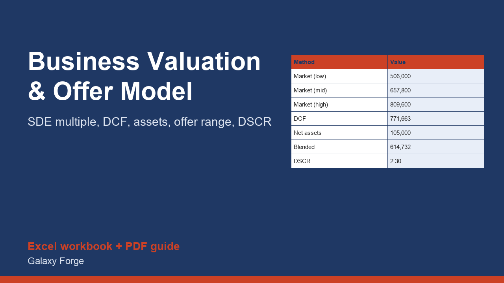

Rebuild a small business's seller's discretionary earnings, value it three ways, blend the results into an offer range and check that the deal can carry its own debt.
Small businesses are usually priced as a multiple of seller's discretionary earnings (SDE): the pre-tax profit one working owner takes home, after adding back the owner's pay, interest, depreciation, one-time costs and personal perks. The hard part is not the multiplication, it is getting SDE honest and checking that the price can be paid for.
This model builds SDE line by line, applies a low, middle and high market multiple, runs a five-year discounted cash flow with a terminal value, values the net assets, and blends the three by weights you choose. It then turns the blend into an opening offer, a target and a walk-away price, and tests whether the cash flow can service the loan you would need.
Use it as a buyer to avoid overpaying, as a seller to understand what a buyer will see, or as an advisor to prepare a first conversation.
1) On Inputs, rebuild SDE from the business's tax returns: net income, owner pay, interest, depreciation, one-time costs, owner perks, minus any one-time income. 2) Enter a market multiple range for the industry, a replacement-manager wage, capex, tax rate, growth and discount assumptions. 3) Enter asset values and liabilities, the blend weights and your loan terms. 4) Read the Valuation sheet: three values, the blended value, the offer range and the debt-service coverage.
Free guide: How to Value a Small Business: SDE, Multiples and a Debt-Service Check
Price: $49, one-time. Download: small_business_valuation_offer_model.xlsx (Inputs, Valuation) and this guide. Works in Excel 2016 or later, Excel for Mac and Excel on the web; opens in Google Sheets and LibreOffice.
New product, listed 2026-11-05: no sales or reviews yet. Example figures in the workbook are illustrative.
This workbook is a calculation tool, not valuation, investment, tax, legal or lending advice. It is not a certified appraisal. Multiples, discount rates and add-backs are your assumptions, and every figure should be verified against tax returns and financial statements by a qualified professional before you buy, sell or borrow.